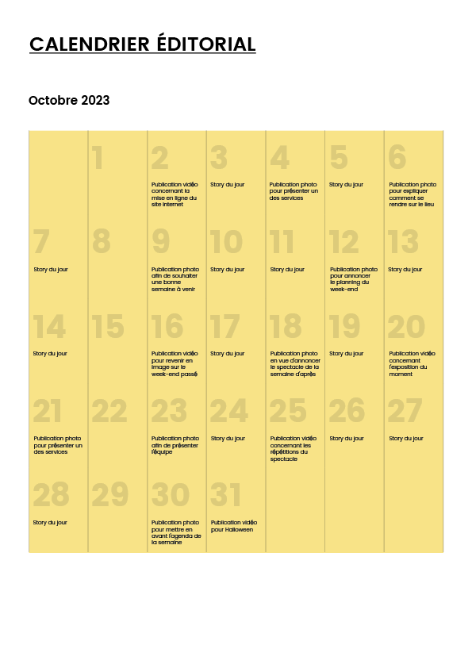
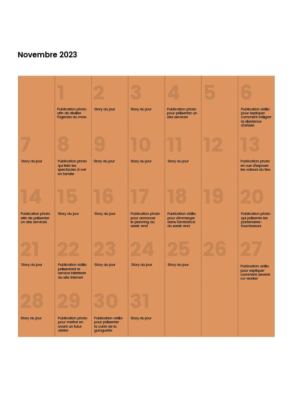

La Maison du Bruit
Dans le cadre de ma formation de Concepteur Designer UI au GRETA, j’ai imaginé une stratégie de communication sur les réseaux sociaux pour La Maison du Bruit, un tiers-lieu culturel fictif situé dans le pays de Lorient. Le lieu réunit plusieurs activités : spectacles vivants, espace dédié aux créateurs, coworking et guinguette. Son ambition est de rendre la culture accessible à différents publics et de créer un espace de rencontre autour de l’art et de la création.
Type
Stratégie éditoriale • Réseaux sociaux
Rôle
Stratégie • Création de contenu • Planification
Outils utilisés
Meta Business Suite • Photoshop • Canva

objectifs
Construire une présence cohérente sur les réseaux sociaux afin de faire connaître le lieu, promouvoir sa programmation et ses différents services, valoriser les artistes et fédérer une communauté locale.
La stratégie
Construire une stratégie de contenu
Avant de créer les publications, j’ai travaillé sur le positionnement du lieu, ses publics, leurs attentes ainsi que les différents objectifs de communication.
Cette réflexion m’a permis de définir plusieurs axes éditoriaux : valoriser la programmation culturelle, présenter les différents services du lieu, mettre en avant les artistes et créateurs, partager les coulisses et transmettre l’identité conviviale de La Maison du Bruit.
J’ai ensuite décliné ces axes en différents formats adaptés aux réseaux sociaux : publications, carrousels, vidéos et stories.
PUBLICS
Étudiants · Actifs · Familles · Retraités · Artistes · Coworkers
01
OBJECTIFS
Notoriété · Promotion des événements · Valorisation des artistes · Création d'une communauté
02
CANAUX
Instagram · Facebook
03
CONTENUS
Publications · Carrousels · Vidéos · Stories · Événements
04
Les axes éditoriaux
Ligne éditoriale
- Programmation culturelle : Spectacles · Expositions · Ateliers · Agenda du week-end
- Découvrir le lieu : Guinguette · Coworking · Espaces créateurs · Informations pratiques
- Artistes & communauté : Artistes · Créateurs · Coworkers · Équipe
- Coulisses : Répétitions · Préparation des événements · Vie quotidienne.
- Identité & valeurs : Culture accessible · Tiers-lieu · Convivialité · Vie locale.
Le calendrier éditorial
Planifier la prise de parole
J’ai construit un calendrier éditorial afin d’organiser les prises de parole, varier les thématiques et les formats et assurer une communication régulière autour du lieu.
La programmation alterne contenus événementiels, présentation des services, valorisation du lieu et contenus plus immersifs autour de son quotidien.


La création de contenu
De la stratégie à la création de contenu
À partir de la stratégie définie, j’ai conçu une série de 9 publications pour Instagram et Facebook afin de simuler le lancement et l’animation des réseaux sociaux du tiers-lieu.
Les contenus alternent informations pratiques, promotion d’événements, présentation des services et valorisation de la vie du lieu.
Ce travail comprend également la rédaction des publications et la sélection des hashtags, afin de construire une prise de parole cohérente autour du lieu et de ses activités.
En complément des publications, plusieurs stories ont été imaginées pour informer et créer davantage de proximité : horaires et accès au lieu, republication du programme du week-end ou encore contenus plus spontanés autour des coulisses et des répétitions de spectacles.
La planification
Programmer les contenus
Les publications ont été intégrées et planifiées à l’aide de Meta Business Suite, afin de mettre en pratique la gestion et l’organisation de contenus destinés à Instagram et Facebook.

Projet suivant
HERIGE Industries
HERIGE Industries est un groupe industriel français spécialisé dans l’univers du bâtiment. Créé en 1908 en Vendée, le groupe s’appuie aujourd’hui sur plus de 1 600 collaborateurs et plusieurs expertises industrielles.